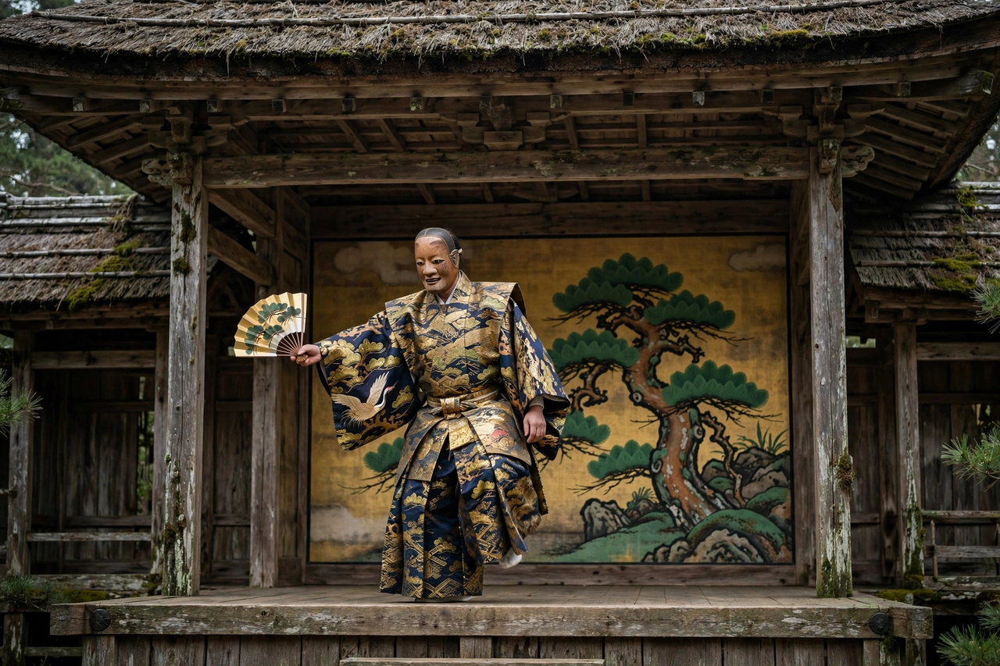

Noh

Noh (能, Nō, "skill" or "talent") is a major form of classical Japanese dance-drama that has been performed since the fourteenth century. Developed by Kan'ami and perfected by his son Zeami Motokiyo under the patronage of the shogun Ashikaga Yoshimitsu, it is the oldest major theatre art still regularly performed today, and was inscribed by UNESCO on its list of Intangible Cultural Heritage in 2008 (as Nōgaku, together with Kyōgen).
Features
Noh is performed on a bare, roofed wooden stage with a painted pine tree backdrop, by a masked principal actor (shite), a supporting actor (waki), a chorus (jiutai) that narrates and voices the protagonist's thoughts, and an ensemble of flute and drums (hayashi). Movement is extremely slow and stylised, costumes are rich brocades, and carved masks — among the most recognisable objects in Japanese art — convey character and emotion through subtle tilts to the light. Plays draw on classical literature such as The Tale of Genji and The Tale of the Heike, ghost stories and legend; Zeami's aesthetic ideals of yūgen (profound grace and subtlety) and monomane (imitation) shaped the repertory of some 250 plays.
Relation to other forms
Comic Kyōgen interludes are traditionally performed between Noh plays within a programme. Noh influenced later Japanese theatre, including Kabuki, and Western artists from W. B. Yeats to Benjamin Britten.
See also: Kabuki, Japanese new religions